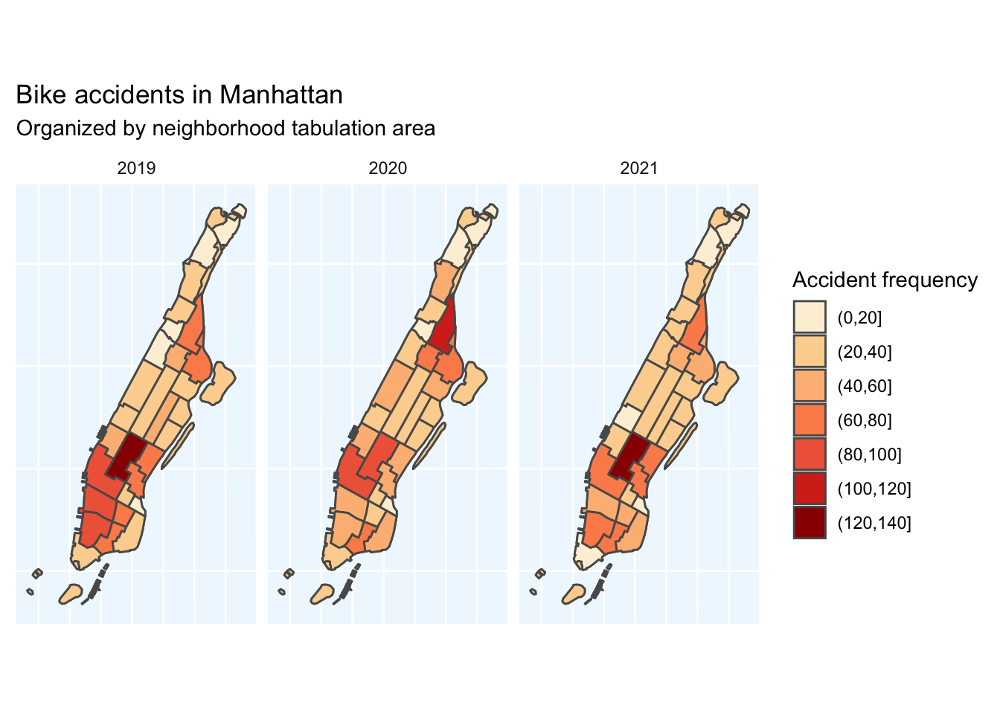
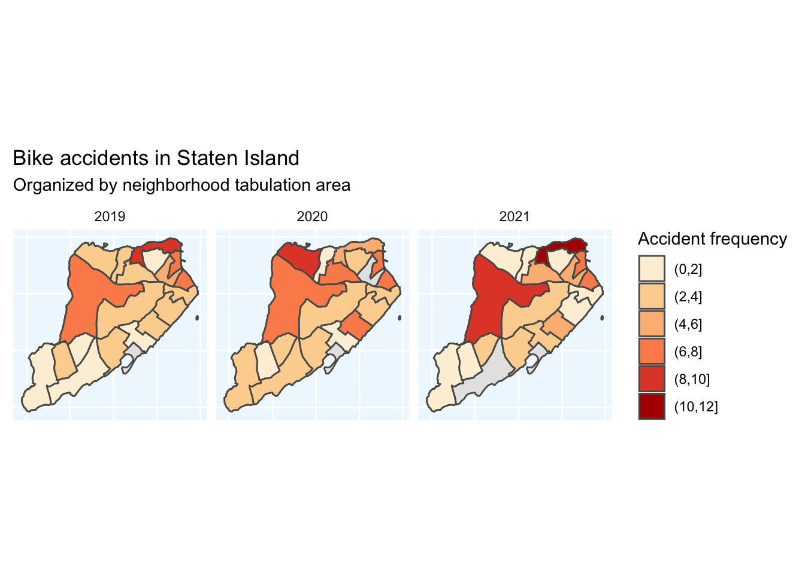
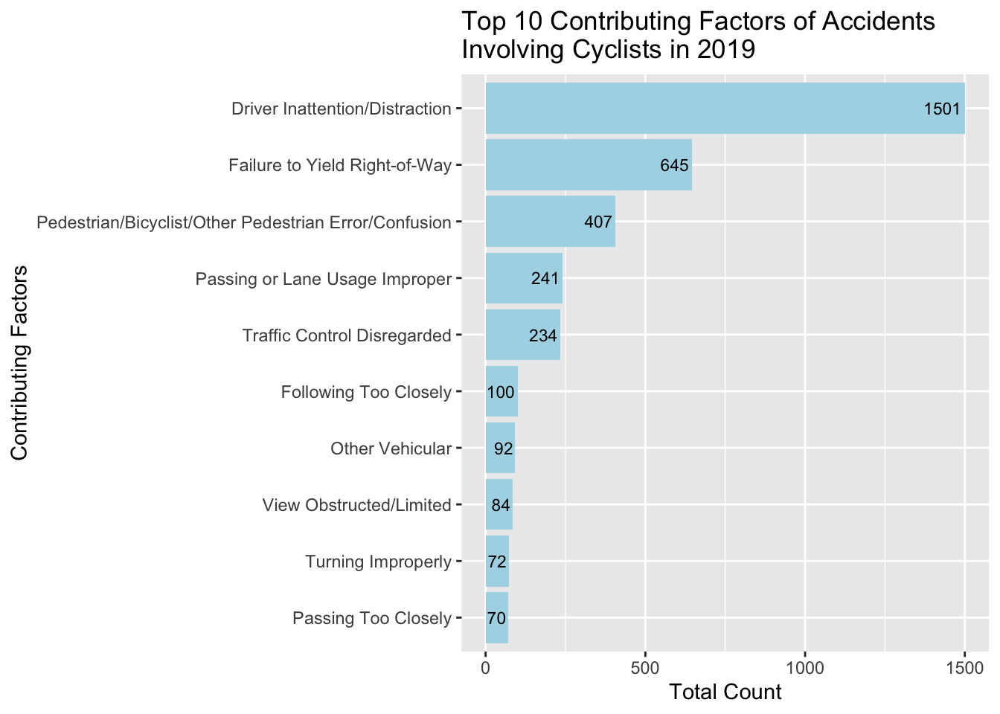
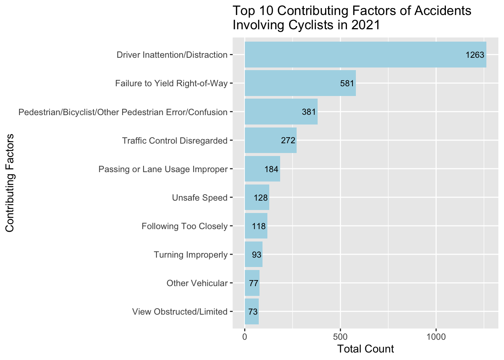
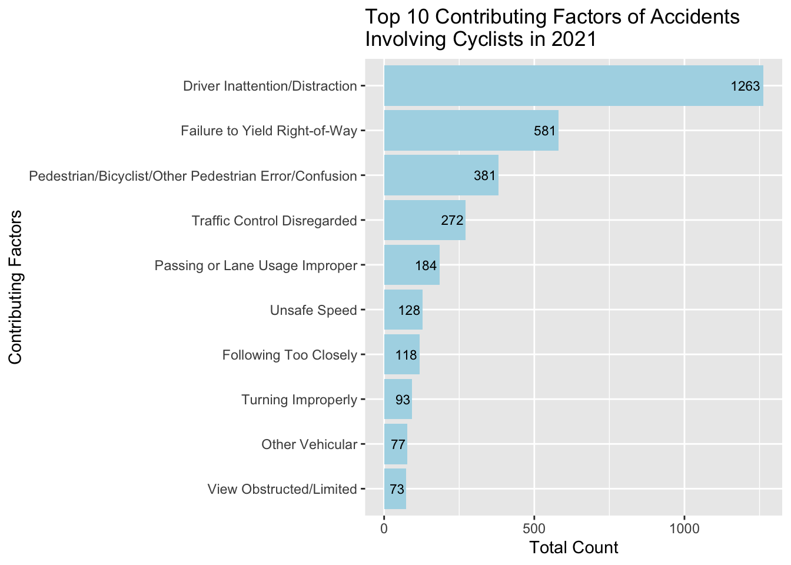

In-depth Analysis
Nicole Tresvalles, Karen Galvan
Last updated on 2021-12-13
SECTION NAME
Write your “more information” section here.
Subsection name
Write a second more_info.html page going more in-depth for people who want more details. In should have
- Between 2-3 more visualizations.
- No more than 500 words of text
To start, we wanted to know where bike accidents are happening.
Leaflet Map of Bicycle Trails
Choropleth Map of Each Borough
Manhattan

The Bronx

Queens
Brooklyn
Staten Island

When are these accidents happening?
Why are these accidents happening?
 
